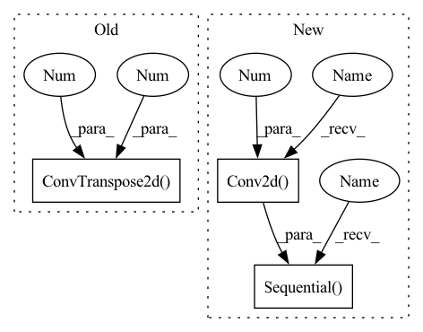

Pattern ID :13951

Before Change
self.dconv2 = nn.Sequential(
nn.SELU(inplace=True),
nn.InstanceNorm2d(256),
nn.ConvTranspose2d(256, 128, 4, stride=2, padding=1)
)
// input 128x128x192 output 256x256x64
self.dconv3 = nn.Sequential(
After Change
// the output after concat would be 32x32x256
self.conv6 = nn.Sequential(
nn.Conv2d(128, 128, 1, stride=1, padding=0) )
// input 32x32x256 output 32x32x128
self.conv7 = nn.Sequential( nn.ReplicationPad2d(2),
nn.Conv2d(256, 128, 3, stride=1, padding=0) )
In pattern: SUPERPATTERN
Frequency: 3
Non-data size: 3
Instances
Fragment ID: 46389410
Project Name: mrrobot2211/pytorch-deep-photo-enhancer
Commit Name: 05683d476dda0c888b3522cb29d7f8a667a7e2cd
Time: 2020-04-29
Author: felipebihaiek@gmail.com
File Name: libs/model.py
M Class Name: Generator
N Class Name: Generator
M Method Name: __init__(1)
N Method Name: __init__(1)
M Parent Class: nn.Module
N Parent Class: nn.Module
M File Name: libs/model.py
N File Name: libs/model.py
M Start Line: 61
M End Line: 124
N Start Line: 26
N End Line: 153
'>
Before Change
return self.fn(x, *args, **kwargs) + x
def Upsample(dim):
return nn.ConvTranspose2d(dim, dim, 4, 2, 1)
def Downsample(dim):
return nn.Conv2d(dim, dim, 4, 2, 1)
After Change
return self.fn(x, *args, **kwargs) + x
def Upsample(dim, dim_out = None):
return nn.Sequential(
nn.Upsample(scale_factor = 2, mode = "nearest"),
nn.Conv2d(dim, default(dim_out, dim), 3, padding = 1)
)
def Downsample(dim, dim_out = None):
return nn.Conv2d(dim, default(dim_out, dim), 4, 2, 1)
'>
Fragment ID: 46389399
Project Name: lucidrains/denoising-diffusion-pytorch
Commit Name: d26acbcae65c4cc4fe77624ce98adce734383ed1
Time: 2022-06-27
Author: lucidrains@gmail.com
File Name: denoising_diffusion_pytorch/denoising_diffusion_pytorch.py
M Class Name: AnonimousClass
N Class Name: AnonimousClass
M Method Name: Upsample(2)
N Method Name: Upsample(1)
M Parent Class:
N Parent Class:
M File Name: denoising_diffusion_pytorch/denoising_diffusion_pytorch.py
N File Name: denoising_diffusion_pytorch/denoising_diffusion_pytorch.py
M Start Line: 63
M End Line: 64
N Start Line: 63
N End Line: 67
'>
Before Change
self.dconv2 = nn.Sequential(
nn.SELU(inplace=True),
nn.InstanceNorm2d(256),
nn.ConvTranspose2d(256, 128, 4, stride=2, padding=1)
)
// input 128x128x192 output 256x256x64
self.dconv3 = nn.Sequential(
After Change
// the output after concat would be 32x32x256
self.conv6 = nn.Sequential(
nn.Conv2d(128, 128, 1, stride=1, padding=0) )
// input 32x32x256 output 32x32x128
self.conv7 = nn.Sequential( nn.ReplicationPad2d(2),
nn.Conv2d(256, 128, 3, stride=1, padding=0) )
'>
Fragment ID: 46389413
Project Name: mrrobot2211/pytorch-deep-photo-enhancer
Commit Name: 05683d476dda0c888b3522cb29d7f8a667a7e2cd
Time: 2020-04-29
Author: felipebihaiek@gmail.com
File Name: libs/model.py
M Class Name: Generator
N Class Name: Generator
M Method Name: __init__(1)
N Method Name: __init__(1)
M Parent Class: nn.Module
N Parent Class: nn.Module
M File Name: libs/model.py
N File Name: libs/model.py
M Start Line: 61
M End Line: 124
N Start Line: 26
N End Line: 153
'>
Before Change
// decoder
def Upsample(dim):
return nn.ConvTranspose2d(dim, dim, 4, 2, 1)
def InterpolateUpsample(dim, *, mode = "nearest"):
return nn.Sequential(
nn.Upsample(scale_factor = 2, mode = mode),
After Change
def Upsample(dim, dim_out = None):
dim_out = default(dim_out, dim)
return nn.Sequential(
nn.Upsample(scale_factor = 2, mode = "nearest"),
nn.Conv2d(dim, dim_out, 3, padding = 1)
)
def Downsample(dim, dim_out = None):
dim_out = default(dim_out, dim)
return nn.Conv2d(dim, dim_out, 4, 2, 1)
'>
Fragment ID: 46389423
Project Name: lucidrains/imagen-pytorch
Commit Name: 36bdefca0e8670ca42b39236315121b703b9533f
Time: 2022-06-27
Author: lucidrains@gmail.com
File Name: imagen_pytorch/imagen_pytorch.py
M Class Name: AnonimousClass
N Class Name: AnonimousClass
M Method Name: Upsample(2)
N Method Name: Upsample(1)
M Parent Class:
N Parent Class:
M File Name: imagen_pytorch/imagen_pytorch.py
N File Name: imagen_pytorch/imagen_pytorch.py
M Start Line: 559
M End Line: 560
N Start Line: 552
N End Line: 558